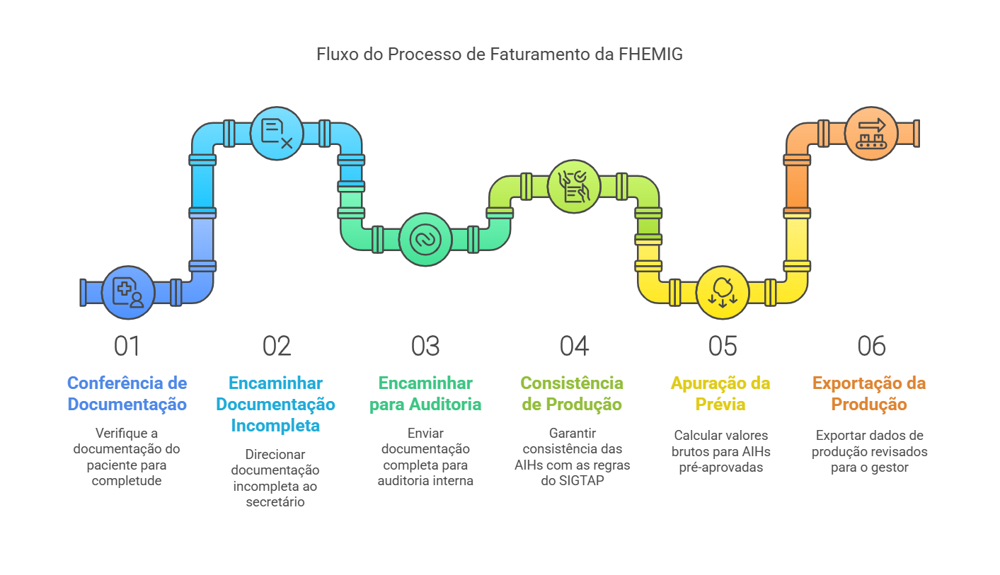

Fluxo do Faturamento no SUS
O processo de faturamento no Sistema Único de Saúde (SUS)
O processo de faturamento no Sistema Único de Saúde (SUS) envolve várias etapas desde a entrada do paciente até o fechamento do prontuário. Esse processo é importante para que os serviços prestados possam ser registrados e cobrados adequadamente.

Forma de acesso dos usuários às unidades da FHEMIG
O acesso dos pacientes às unidades da FHEMIG ocorre das seguintes formas:
| Forma de Acesso | Descrição |
|---|---|
| Referenciada | Encaminhamento de UBS, UPAs ou outras unidades para atendimentos especializados. |
| Urgência e Emergência | Atendimento direto em pronto-socorro, com triagem baseada na classificação de risco. |
Como um paciente pode ser internado?
O encaminhamento pode ocorrer de diversas formas:
- 🚑 Emergência: Paciente atendido no pronto-socorro, que necessita de internação imediata.
- 🏥 Ambulatório: Após consulta em um serviço especializado.
- 🔄 Referência externa: Encaminhamento de outro hospital ou posto de saúde.
- 📅 Internação eletiva: Programada para cirurgias ou tratamentos específicos.
Caráter de atendimento
Refere-se ao tipo de internação e à urgência da condição do paciente, podendo incluir as seguintes classificações principais:
| Código | Caráter de Atendimento |
|---|---|
| 01 | Eletivo - Internação programada sem urgência. |
| 02 | Urgência - Atendimento emergencial. |
| 03 | Acidente de Trabalho - Internação decorrente de acidente laboral. |
| 04 | Acidente de Trajeto - Ocorrido no deslocamento para o trabalho. |
| 05 | Acidente de Trânsito - Fora do contexto de trabalho. |
| 06 | Lesões ou Envenenamento - Por agentes químicos ou físicos. |
Regulação do acesso
O hospital cadastra a solicitação de internação ou transferência no sistema SUSfácilMG. Esse sistema informatizado permite o cadastro e acompanhamento das solicitações, facilitando a comunicação entre as unidades de saúde e as centrais de regulação.
🖥️ SUSfácil MG
📌 Sistema que gerencia solicitações de internação e transferência.
🏥 Núcleo Interno de Regulação (NIR)
📌 Responsável pela movimentação interna dos pacientes dentro dos hospitais, garantindo a otimização dos recursos.
Laudo para solicitação de AIH
O laudo é o documento necessário para solicitar a autorização de internação do paciente no SUS. Sua emissão é uma responsabilidade restrita a médicos, cirurgiões-dentistas e enfermeiros obstetras, conforme suas respectivas áreas de atuação.
Modelo de Laudo AIH
O laudo deve conter:
- 📌 Nome e CNS do paciente
- 📌 Motivo da internação
- 📌 Diagnóstico inicial
🔗 Acesse o modelo de laudo AIH aqui
Envio da solicitação
A solicitação de internação pode ser encaminhada via Central de Regulação de Leitos da Secretaria Municipal de Saúde (SMS), que gerencia a alocação de leitos na rede pública. Isso pode ser feito via sistema informatizado ou comunicação direta entre a unidade e a central.
O papel da Central de Regulação de Leitos
A Central de Regulação de Leitos analisa solicitações de internação com base na urgência e disponibilidade. Se aprovado, o hospital é designado para o atendimento.
Autorização de Internação Hospitalar (AIH)
É um documento essencial no (SUS) para formalizar a internação de um paciente. A AIH é emitida para registrar, autorizar e financiar a internação hospitalar e o tratamento associado, incluindo procedimentos e medicamentos necessários ao cuidado do paciente.
Dados pessoais e administrativos
| Dado | Descrição |
|---|---|
| Nome do Paciente | Identificação completa do paciente. |
| Data de Nascimento | Idade e cálculo de elegibilidade. |
| Número do CNS | Vinculação ao SUS. |
| Diagnóstico Inicial | Razão da internação. |
| Código da AIH | Número único para registro e faturamento. |
Informações clínicas de admissão
- Diagnóstico inicial e motivo da internação.
- Histórico clínico e antecedentes relevantes, como condições crônicas e alergias.
- Laudo médico que justifica a internação, contendo sinais, sintomas e possíveis diagnósticos diferenciais.
Registro da assistência prestada ao paciente
🏥 Registros Essenciais
📌 Exames e procedimentos: Testes laboratoriais, cirurgias e tratamentos.
📌 Evolução clínica: Progresso do paciente, resposta ao tratamento.
📌 Prescrição médica: Medicamentos administrados, dosagem e horário.
📌 Acompanhamento multiprofissional: Fisioterapeutas, enfermeiros, psicólogos.
Essas informações registradas no prontuário são essenciais para garantir a qualidade do atendimento, a segurança do paciente e a transparência administrativa, além de viabilizar a comunicação entre os profissionais de saúde envolvidos.
Numeração de AIH
- Geração do número da AIH: Após a aprovação, a Central de Regulação gera o número da AIH, único para cada internação. Esse número identifica oficialmente o atendimento no sistema SUS e permite o controle e o faturamento dos serviços prestados.
- Envio à unidade: O número da AIH é enviado à unidade, que o registra no prontuário do paciente. Esse número é essencial para documentar todo o atendimento, desde a admissão até a alta, e para o faturamento junto ao SUS.
- Acompanhamento do status: A unidade pode acompanhar o status da solicitação e a numeração da AIH por meio dos sistemas de regulação de saúde estadual ou municipal, integrados ao sistema nacional do SUS.
📌 Etapas do Número AIH
1️⃣ Solicitação da AIH pelo hospital.
2️⃣ Análise da Central de Regulação.
3️⃣ Geração do número AIH e envio ao hospital.
4️⃣ Registro no prontuário do paciente.
5️⃣ Monitoramento da internação e faturamento.
Principais documentos que compõem o prontuário
O prontuário é um documento fundamental e legal que compila todos os registros e informações sobre a assistência prestada ao paciente durante sua estadia ou tratamento em uma instituição de saúde. Ele contém detalhes essenciais para o acompanhamento médico, histórico do paciente, diagnóstico, procedimentos e tratamentos realizados.
Espelho da AIH
O "Espelho da AIH" é um resumo detalhado que inclui todas as informações da internação, como diagnósticos e procedimentos realizados. Este documento é essencial para a prestação de contas e o faturamento dos serviços.
Principais informações contidas no Espelho da AIH:
- Dados Administrativos do Paciente:
- Nome completo, data de nascimento, sexo e Cartão Nacional de Saúde (CNS).
- Informações de identificação e admissão do paciente na unidade.
- Dados da Internação:
- Data de entrada e alta, tempo total de internação.
- Código e nome da unidade hospitalar, localização do leito e tipo de atendimento.
- Diagnóstico e Procedimentos Realizados:
- CID principal e secundário, justificando a internação e descrevendo a condição clínica.
- Procedimentos realizados durante a internação, incluindo cirurgias, exames e terapias.
- Prescrição Médica e Medicamentos:
- Registro de medicamentos administrados, com dosagens, frequências e datas de administração.
- Motivo da Alta ou Transferência:
- Razão pela qual o paciente teve alta hospitalar, como melhora clínica, transferência ou óbito.
- Informações de Custos e Faturamento:
- Detalhamento dos custos dos procedimentos, medicamentos e materiais utilizados.
- Assinaturas e Dados dos Profissionais Responsáveis:
- Assinatura do médico responsável e da equipe multiprofissional que acompanhou o paciente.
Essas informações permitem a análise e o controle da assistência prestada e dos recursos utilizados, além de assegurar a qualidade e a transparência do atendimento no âmbito do SUS.